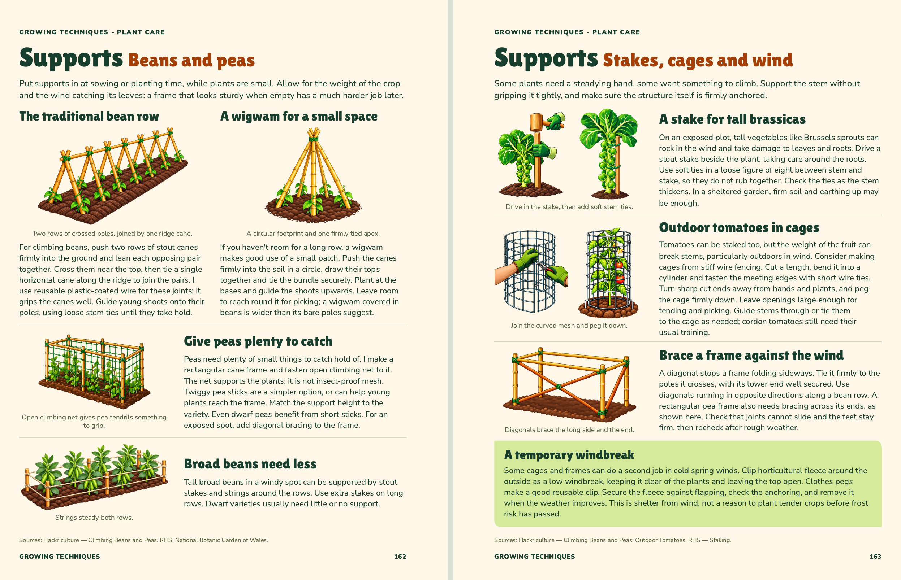
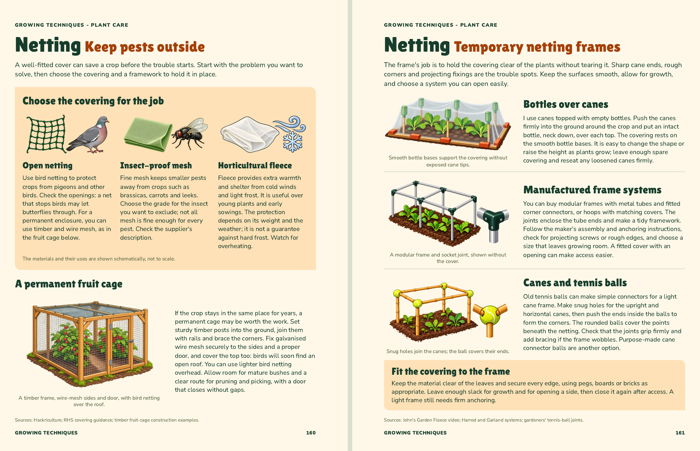

The Vegetable Guru · 30 October 2026 · Supports approved by John
John’s latest wording edits are included, with the denser bean row, broad-bean diagram and mature brassica illustrations retained. Both sections are approved and included at pages 160–163 in the updated main book.

John approved this two-page section on 29 October. The accepted copy, illustrations and layout remain unchanged.
